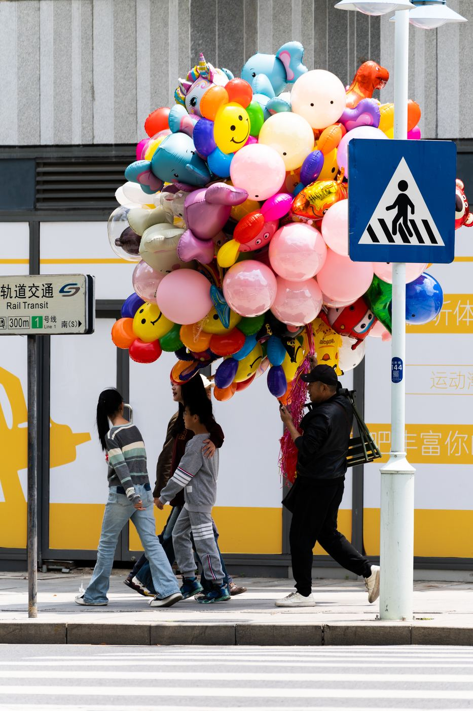

任务 · 提醒 · 日记
本地存储 / 可选本机 AIRemember the little things.
本地存储 / 可选本机 AIRemember the little things.
01 / NEW · A LITTLE LESS TO REMEMBER
记下来，让提醒真正到达。
NoticeMe · 本地优先的待办、提醒与日记工具。自然语言快速记任务、置顶提醒卡与重复任务，让重要的小事有处安放。
PERSONAL FIELD NOTES / VOL. 2026
 胡睿杰 Ruijie Hu
胡睿杰 Ruijie Hu
计算机科学 × 商业人工智能。
在香港城市大学读书，也在数据、产品和真实业务之间寻找连接。最近，在深圳做战略实习。
从一张不太干净的表，到一场怕下雨的网球。
先试试下面的小样，再打开完整产品。
NoticeMe · 本地优先的待办、提醒与日记工具。自然语言快速记任务、置顶提醒卡与重复任务，让重要的小事有处安放。
适合出发
固定样例数据，非实时预报；实际建议请打开应用查看。
学费缴纳提醒截止日期临近 · P0
未分类Canvas 作业通知课程与作业 · P1
未分类本周校园通讯订阅摘要 · P3
未分类还有一个从论文走向服务的项目：SE-CGAN 图像去雾 ↗ · 首屏即可拖动对比，也能体验完整推理 ↗。
约球前，要知道球场和时段。
让多源天气数据服务于一次出发。
用实况上报与测站数据检验预报。
战略实习生。消费电子行业研究、竞品资料与市场数据整理方向；此处为岗位职责范围。
900 条运营明细转化分析、257 人面试协调，以及批量归档工具链。
651 只股票的多因子建模、期权策略回测与五步自动化研究流水线。
ARM 开发板测试、代码调试与技术文档整理。
政务平台 APP 功能修改、接口与黑盒测试、接口文档整理。
香港城市大学 · 商业人工智能硕士在读2026.09 — 2027.06 · 生成式 AI、商业分析、数据可视化
常州大学 · 计算机科学与技术本科2021.10 — 2025.06 · GPA 4.1 / 5 · 雅思 7.0


数据分析、商业 AI、产品实践，或者约一场网球。